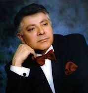

Ռուբեն Մաթևոսյան
Կենսագրություն
Ռուբեն Մաթևոսյանը ծնվել է 1941 թվականի հունվարի 12-ին Սպիտակում։ Նա հայ ժողովրդական երգարվեստի նշանավոր ներկայացուցիչներից է։ Նրա երաժշտական ուղին սկսվեց դեռ երիտասարդ տարիներին՝ 1961 թվականին, երբ միացավ Արամ Մերանգուլյանի անվան անսամբլին՝ որպես մենակատար։ 1967-ին ավարտեց Երևանի կոնսերվատորիան, իսկ 1996-ից դարձավ նույն անսամբլի գեղարվեստական ղեկավար։
Նա նաև ղեկավարել է «Աստղեր» անսամբլը և դասավանդել է թե՛ էստրադային ու ջազային քոլեջում, թե՛ Երևանի կոնսերվատորիայում։ 1999 թվականին ընտրվել է Հայ երգարվեստի միության նախագահ։
Մաթևոսյանի երգացանկը ներառում է ժողովրդական, աշուղական, ժամանակակից ստեղծագործություններ։ Նրա հայտնի կատարումներից են՝ «Հորովել», Շերամի «Պարտեզում վարդ էր բացված», «Դու իմ մուսան ես», Ջիվանու «Ձախորդ օրերը» և այլ երգեր։
Բացի երաժշտական գործունեությունից, նա նաև մասնակցել է ֆիլմերի նկարահանումներին՝ ինչպես գեղարվեստական, այնպես էլ վավերագրական։ Նրա արվեստն արժանացել է բազում պարգևների և կոչումների՝ այդ թվում՝ ՀԽՍՀ ժողովրդական արտիստի կոչում (1978), Մովսես Խորենացու մեդալ (1998) և Սուրբ Մեսրոպ Մաշտոցի շքանշան (2011)։